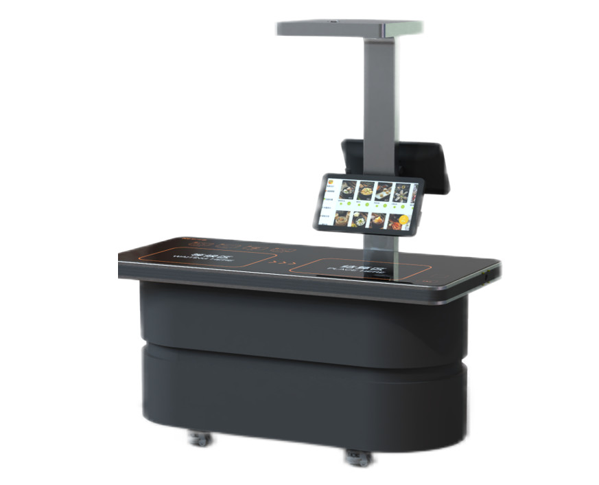
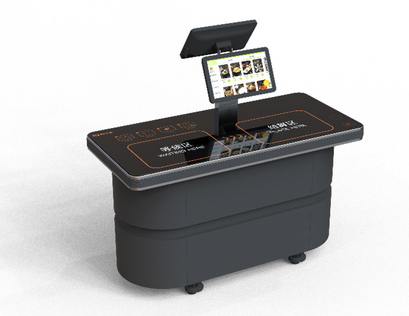
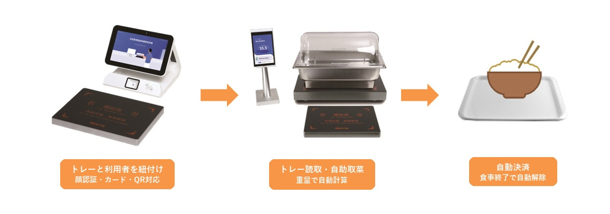

本文要点 - 食堂自动结算三种方式（AI图像识别・RFID・计量）的原理 - 结算速度・识别精度・成本・运营工时的一览比较 - 为自家食堂选择最优方式的流程图 - 引入前应确认的检查清单
「员工食堂的收银排队太长」「结算人员难以保证」「结算失误引发投诉」——从根本上解决这些烦恼的正是自动结算系统。
不过，自动结算并非只有一种，方式各不相同：AI图像识别・RFID・计量。它们的原理、成本以及擅长的食堂类型都各有差异。
本文将讲解三种方式各自的原理，并从比较表・选定流程图到引入检查清单进行全面梳理。作为判断「哪种方式适合自家食堂？」的参考，敬请阅读到最后。
食堂自动结算备受关注的背景
在员工食堂・学生食堂・医院食堂等团体供餐的现场，长年以来「手动结算」都是理所当然的。然而近年来，以下三项变化正在加速自动结算的引入。
1. 日益严峻的人手不足
食堂的收银每个窗口都需要1～2名员工。在多窗口的大规模食堂，仅结算就需要数名员工的人工费。此外，兼职员工招聘困难以及高离职率，也给人手不足雪上加霜。
2. 高峰时段的排队问题
午餐的高峰时间是有限的。手动结算每人需要30～60秒，因此在数百人规模的食堂，出现20分钟以上排队的情况也并不罕见。员工的午休被「排队等待」消耗掉，对企业而言也是巨大的损失。
3. 数据化经营与减少食物浪费的诉求
依赖经验和直觉的备货（进货），难以准确掌握食品损耗。随着社会对SDGs和减少食物浪费的关注日益提高，基于销售数据的高精度备货计划正受到追求。自动结算也是自然而然地构建该数据基础的手段。
食堂自动结算系统｜三种方式概要
目前在食堂中已实用化的自动结算系统，大致可分为三种。
① AI图像识别方式

原理：结算台上的AI摄像头（500万像素）拍摄托盘上的菜品 → 通过图像识别自动判定品项与数量 → 瞬间计算金额
| ✅ | 无需特殊餐具 —— 若采用「菜品识别模式」，可直接沿用普通餐具引入 |
| ✅ | 菜单登记只需拍摄 —— 在终端上拍照即自动学习。日替菜单也可即日应对 |
| ✅ | 无需服务器的边缘型设计 —— AI引擎搭载于结算台本体 |
| ✅ | 两种识别模式 —— 餐具识别（精度99.99%）/ 菜品识别（精度99%）。实际食堂中当日菜单数量仅10～30品，较为有限，故在实际运营中几乎为100% |
🎯 推荐：日替菜单丰富的员工食堂、多品项的食堂
② RFID方式

原理：将菜单信息记录于内置RFID芯片的餐具 → 只需放到结算台即可瞬间读取 → 自动计算多件餐具的合计金额
| ⚡ | 读取速度最快 —— 即使约30品也可在1秒内一并识别。精度几乎100% |
| ♻️ | 餐具洗净后可原样再利用 —— 信息可随时改写。也支持早・午・晚不同的价格设定 |
| 📦 | 支持批量改写 —— 在出品机上向餐具写入菜单可在短时间内完成 |
| 🔑 | 支持三种结算方式 —— 人脸认证・QR码・IC卡。也搭载订单修正功能 |
| ⚠️ | 注意点 —— 需要内置RFID的餐具（初期成本较高）。最大耐热温度85度 |
🎯 推荐：以固定菜单为主的大规模食堂、需要高频使用・大量处理的设施
③ 计量方式

原理：用托盘绑定机将餐具与托盘关联 → 以自助餐形式自由取用 → 计量结算台按克数自动结账
| 🍽️ | 「想吃多少取多少」的自助式 —— 提升用餐满意度＋自然减少剩饭剩菜 |
| ⚖️ | 计量精度以克为单位 —— 重力感应＋芯片识别的高精度计量 |
| 💳 | 无感支付 —— 支持人脸认证・QR・IC卡。无需员工介入 |
| 🔍 | 食品安全溯源 —— 记录所取菜品的详情。可对食品安全问题迅速追溯 |
| 📊 | 营养数据分析 —— 将消费数据与营养成分关联，提供个性化营养报告 |
🎯 推荐：自助餐・自助形式的食堂、重视减少食物浪费的设施
三种方式全面比较表
| 比较项目 | AI图像识别 | RFID | 计量 |
|---|---|---|---|
| 识别方式 | 摄像头＋AI图像识别 | 读取RFID芯片 | 重量传感器＋芯片 |
| 餐具的限制 | 无（菜品识别模式）/ 专用餐具（餐具识别模式） | 需要内置RFID的专用餐具 | 普通餐具＋专用托盘 |
| 结算速度 | 约1～2秒 | 约1秒 | 约10～15秒 |
| 识别精度 | 99%（菜品模式）～ 99.99%（餐具模式） | 99.99%以上 | 基于重量（以克为单位） |
| 初期成本 | 中（仅结算台） | 较高（结算台＋内置RFID餐具＋出品机） | 中（结算台＋托盘绑定机＋专用托盘） |
| 餐具的耐热限制 | 无 | 最大85度 | 无 |
| 菜单变更应对 | 只需用摄像头拍摄（即日应对） | 在出品机上向餐具写入芯片 | 在管理界面更新重量主数据 |
| 是否需要服务器 | 不需要（边缘型） | 不需要 | 不需要 |
| 结算方式 | 人脸认证・QR・IC卡 | 人脸认证・QR・IC卡 | 人脸认证・QR・IC卡 |
| 数据分析 | ◯（按菜单销售・营养分析） | ◯（按菜单销售・营养分析） | ◎（按克消费＋营养分析） |
| 食物浪费对策 | ◯（销售数据分析→备货优化） | ◯（销售数据分析→备货优化） | ◎（促进少量取用＋数据分析） |
| 推荐食堂 | 日替菜单丰富的食堂 | 以固定菜单为主的大规模食堂 | 自助餐・自助形式 |
要点：三种方式共通，均可从PC管理终端进行菜单管理・订单管理・销售报表・经营分析。可实现从手写账簿或Excel管理中脱离，是迈向数据驱动型食堂经营的第一步。
方式选定流程图｜用三个问题判定最优方式
自家食堂适合哪种方式，可通过以下三个问题来判断。
Q1. 是否为自助餐 / 自助形式？
→ Yes → 推荐计量方式
在自助餐形式中，利用者自由取用菜品，因此相比以「品项×数量」结算的AI・RFID方式，基于重量的计量方式更为自然契合。以克为单位计费可促使「想吃多少取多少」的行为，也直接有助于减少食物浪费。
Q2. 是否可以更换餐具？
→ Yes → 推荐RFID方式
若环境允许引入专用的内置RFID餐具，则读取速度最快的RFID方式颇具优势。尤其在以固定菜单为主、每天处理数百至数千份的大规模食堂，每份1秒的高速结算大显身手。
Q3. 日替菜单是否较多？
→ Yes → 推荐AI图像识别方式
在因日替而品项频繁变化的食堂，每次菜单变更都要改写餐具芯片的RFID方式较为费事。若采用AI方式，只需用摄像头拍摄新菜单的照片即可即日应对。由于也无需特殊餐具，可几乎不改动现有食堂布局即可引入。
难以取舍？ → 我们实施可在实际食堂环境中试用多种方式的免费PoC（概念验证）。相比纸面上的比较，在现场体验后再作判断更为可靠。
各方式共通的管理功能
无论采用哪种方式，自动结算系统均标准搭载以下管理平台。
🖥 PC管理终端
| 功能 | 内容 |
|---|---|
| 仪表盘 | 一目了然地确认当日销售・实时订单信息・按菜单的销售数量 |
| 菜单管理 | 登记・编辑菜品类别・品项・价格・图像 |
| 订单管理 | 全部订单的明细检索・异常订单的检测与警报 |
| 销售报表 | 按日・周・月・用餐场次（早/午/晚）的销售汇总 |
| 经营分析 | 按菜单的销售排行・食堂利用率・客单价走势 |
| 设备管理 | 各结算台的运行状况・警报管理 |
📱 移动端联动
- 面向利用者：确认消费历史、营养分析报告、余额充值
- 面向管理者：销售快报的通知、设备警报
🔒 安全性
- 人脸认证：搭载红外线双摄像头。防止以照片或3D模型进行的冒用
- QR码：正扫・反扫两者均支持
- IC卡：非接触M1/CPU，符合ISO/IEC14443标准
引入前应确认的检查清单
在考虑引入自动结算系统时，事先整理以下项目会更为顺畅。
| 检查项目 | 确认要点 |
|---|---|
| ☐ 每日的餐数 | 把握规模感（～300份 / 300～1,000份 / 1,000份以上） |
| ☐ 食堂的形式 | 套餐型 / 自助餐型 / 混合型 |
| ☐ 当前的布局与动线 | 结算台的设置空间・电源・网络环境 |
| ☐ 菜单变更的频率 | 日替 / 周替 / 固定 |
| ☐ 餐具能否更换 | 是否可切换为RFID专用餐具 |
| ☐ 预算感 | 仅结算设备 / 含餐具的总成本 |
| ☐ 网络环境 | Wi-Fi / 有线LAN（以太网10/100Mbps） |
| ☐ 结算方式的要求 | 人脸认证 / QR / IC卡 / 多种支持 |
引入的推进方式｜5个步骤
| 步骤 | 内容 |
|---|---|
| STEP 1 | 现状访谈 —— 把握食堂的布局・餐数・运营课题 |
| STEP 2 | 方式提案 —— 从三种方式中提出最优方式（或组合） |
| STEP 3 | 免费PoC —— 在实际食堂环境中安装设备，验证效果 |
| STEP 4 | 正式引入 —— 菜单登记・AI学习・员工培训 |
| STEP 5 | 开始运营＆支持 —— 持续的运营支援与数据活用的提案 |
💡 什么是PoC（概念验证）？ 是在正式引入之前，将设备带入实际食堂进行测试运营的机制。设备的设置・回收等全部由本公司负责，不产生任何费用。您可在现场确认「是否真的有效」后再作判断。
常见问题（FAQ）
Q. 引入自动结算系统时，是否需要大幅改动现有的食堂布局？
A. 不需要。任何一种方式都只需将结算台放置在现有的收银空间即可引入。AI方式采用无需服务器的边缘型设计，因此也无需进行大规模的网络施工。
Q. 是否也能应对日替菜单？
A. 可以。若采用AI图像识别方式，只需在终端上拍摄新菜单的照片即可自动学习。RFID方式则通过出品机将菜单信息写入餐具。计量方式则在管理界面更新重量主数据。
Q. 若发生结算错误该如何处理？
A. 所有方式均可在结算界面上修正订单。此外，管理终端还具备检测并修正异常订单的功能。
Q. 请告知引入成本的大致标准。
A. 因方式・台数・食堂规模而异。请先通过免费PoC确认实际效果，我们将根据结果为您提出最优的配置与费用方案。
Q. 能否组合多种方式引入？
A. 可以。例如可像「套餐区采用AI方式、沙拉吧采用计量方式」那样，在食堂内按不同区域组合使用不同的方式。
总结｜难以抉择时先用PoC试一试
食堂自动结算系统有AI图像识别・RFID・计量三种方式，各有其强项。
| 方式 | 一句话总结 |
|---|---|
| AI图像识别 | 无需特殊餐具，可轻松引入。擅长日替菜单 |
| RFID | 读取速度最快。最适合固定菜单×大规模食堂 |
| 计量 | 最适合自助餐形式。减少食物浪费的效果最大 |
哪种方式最适合自家食堂，在实际环境中试用最为可靠。
本公司实施可体验全部三种方式的免费PoC。设备的搬入・安装・回收均由本公司负责，不产生任何费用。
不妨先在现场确认一下「我们食堂适合哪种方式更有效」？